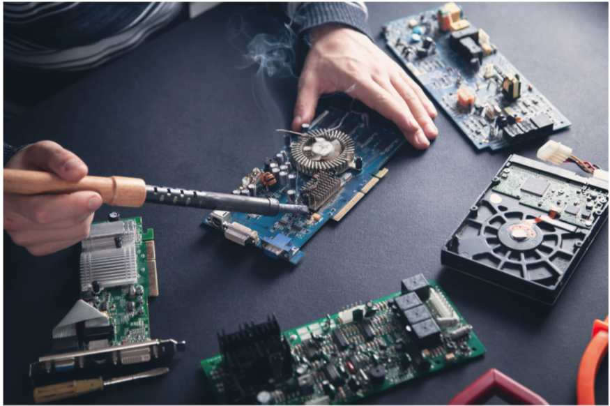
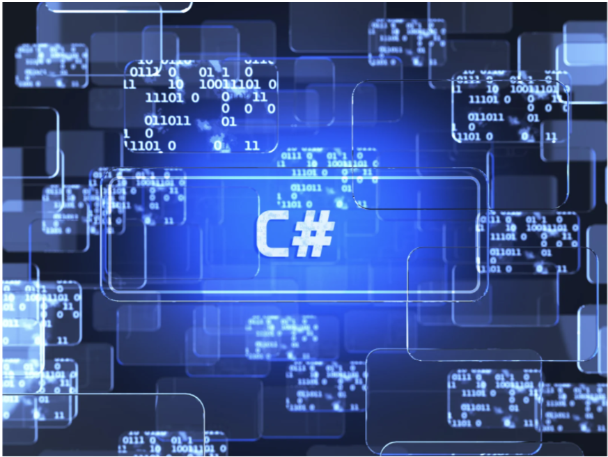
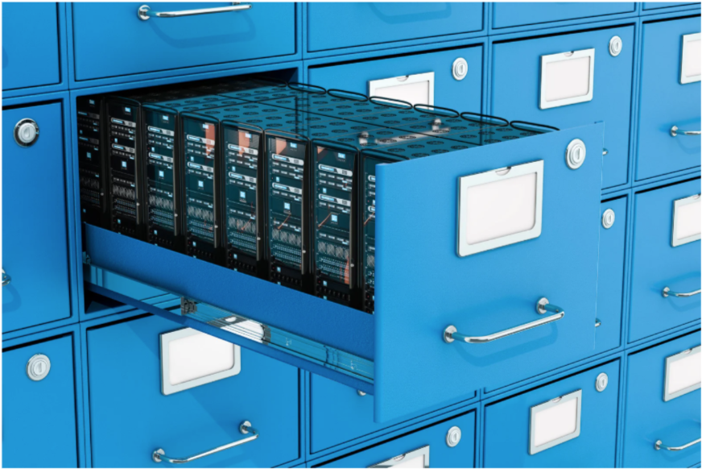

Wie komme ich ins Internet?
Das Internet ist heute so selbstverständlich, dass wir kaum noch darüber nachdenken, wie es eigentlich zu uns nach Hause gelangt. Bei uns lernst du, wie dein Heimnetzwerk wirklich funktioniert – damit du später in deiner eigenen Wohnung bestens vernetzt bist und jederzeit problemlos mit deinen Freunden in Kontakt bleiben kannst.
Wie ist mein PC aufgebaut und wie funktioniert er?

Hast du dich auch schon einmal gefragt, wie ein PC eigentlich funktioniert? Dann bist du hier genau richtig. Lerne die Grundlagen kennen, die in jedem Rechner, Smartphone oder Tablet stecken – von Nullen und Einsen bis hin zu den technischen Wundern, die unseren Alltag und Beruf erleichtern. Die Rechnerarchitektur: ein echtes Meisterwerk moderner Technik.
Was sind Programmiersprachen und welche gibt es?
Einen PC zusammenzubauen ist schön und gut – doch wahre Meister erwecken ihn erst zum Leben. Und das gelingt nur mit Programmen. Tauche ein in die faszinierende Welt der Programmierung, löse spannende Logikaufgaben in C# und wachse an jeder Herausforderung. Mach deine ersten Schritte auf dem Weg, ein Meister der Software zu werden.
Welche großen Softwareprojekte gibt es?
Große Softwareprojekte prägen unseren Alltag: von Betriebssystemen wie Windows oder macOS über Office-Programme bis hin zu Plattformen wie Google, Spotify – und natürlich auch großen Spielen wie Fortnite oder Minecraft. Millionen Zeilen Code arbeiten hier perfekt zusammen. Erfahre mehr darüber, wie solche Meisterwerke der Technik entstehen und logistisch funktionieren!
Wie plane ich Software anhand einer Kundenbeschreibung?
Bevor aus einer Idee echte Software wird, muss sie genau geplant werden – besonders, wenn sie für Kunden entwickelt wird. Anhand einer Kundenbeschreibung lernst du, die Anforderungen zu verstehen, in einzelne Schritte zu zerlegen und ein Konzept zu erstellen, das später umgesetzt werden kann. Natürlich steht bei uns die Praxis vor der Theorie: Learning by Doing!
Wie koordiniere ich als Projektleiter Mitarbeiter in großen Softwareprojekten?
Als Projektleiter in großen Softwareprojekten koordinierst du Teams, planst Aufgaben und stellst sicher, dass alles reibungslos abläuft – dabei helfen bewährte Vorgehensmodelle wie Scrum oder Wasserfall. Erfahre mehr darüber, wie man Projekte erfolgreich leitet und gemeinsam beeindruckende Software entstehen lässt.
Wie entwickle ich Software mit der Sprache C#?

Mit C# kannst du leistungsstarke Software entwickeln – von kleinen Tools bis zu komplexen Anwendungen. Dabei lernst du die Grundlagen der Objektorientierung kennen, um Programme klar zu strukturieren und wiederverwendbar zu gestalten. Außerdem zeigen wir dir, wie du moderne Entwicklungsumgebungen (IDEs) nutzt, um effizient zu programmieren.
Wie können Unternehmen riesige Datenmengen sicher speichern?

Unternehmen speichern riesige Datenmengen in leistungsstarken Datenbanken wie MySQL, PostgreSQL oder modernen NoSQL-Systemen. Replikation, Verschlüsselung und regelmäßige Backups sorgen dafür, dass die Informationen sicher und jederzeit verfügbar bleiben. Bei uns lernst du die Grundlagen dieser Datenbanken kennen – und wie sie im Hintergrund ganze Unternehmen am Laufen halten.
Wie kann ich das Speichern meiner Daten optimieren?
m das Speichern deiner Daten zu optimieren, setzen moderne Datenbanken auf klare Strukturen und sogenannte Normalisierung. Dabei werden Daten so aufgeteilt, dass keine unnötigen Wiederholungen entstehen und alles logisch zusammenpasst. Das macht deine Datenbank nicht nur übersichtlicher, sondern auch schneller und effizienter. Steige mit uns in die Prinzipien ein und lerne, deine Daten sauber, schlank und performant zu verwalten.
Wie verbinde ich meine Datenbank mit meiner selbst geschriebenen Software?
Damit deine eigene Software mit einer Datenbank zusammenarbeiten kann, braucht es eine Verbindung, über die beide miteinander “reden” können. Deine Anwendung kann dann Daten speichern, ändern oder abrufen – ganz automatisch im Hintergrund. Lerne die Zusammenhänge zwischen Software und Datenbanken kennen und wie beide reibungslos zusammenspielen.